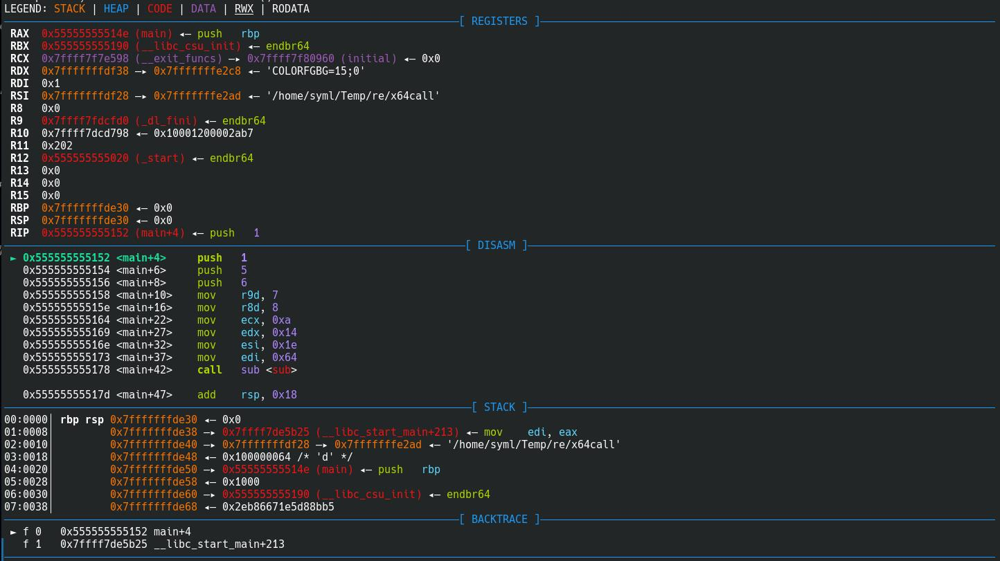
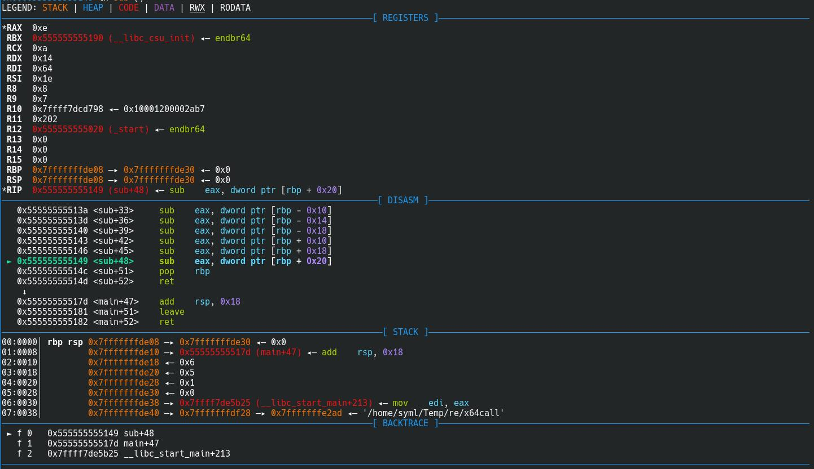

之前逆向工程的作业，感觉写得还是挺清楚的所以说挂上来。
调用惯例为一系列规则，规定了在机器层面如何进行函数调用。调用惯例一般定义了参数是通过寄存器还是栈保存（或者都有）、参数传递的顺序是自左到右还是自右到左、返回值是保存在寄存器还是在栈中（或者都有）等内容。 常⻅的调用惯例有 CDECL，STDCALL，FASTCALL 等。
# CDECL 调用
# 固定参数
#define _cdecl __attribute__((__cdecl__)) | |
int _cdecl sub(int a, int b){ | |
return (a - b); | |
} | |
int main(){ | |
return sub(2 , 1); | |
} |
使用命令 gcc cdecl.c -o cdecl -O0 -m32 -fno-pie 进行编译。在 x86-64 下，一般都是通过类似 FASTCALL 的方式进行调用，编译器往往会忽略掉设置的其他调用惯例，故这里设置编译选项 -m32 ，指定目标为 32 位设备。而 gcc 默认开启 PIE（Position Independent Executable），代码中会出现额外的函数 __x86.get_pc_thunk.ax 调用，增加这里分析的复杂性，故通过 -fno-pie 将其关闭。
通过 IDA 反汇编 main 函数和 sub 函数如下：
使用 gdb 进行动态调试。在 main 函数下断点。此时，程序的状态是：
main 函数在调用 sub 函数（call sub）之前，进行了两步操作：
push 1
push 2
call sub; sub(2, 1);
分别是将参数 1 和 2 压栈，注意到，这里压栈的顺序是从右向左压栈。执行完成后寄存器和栈的情况如下：
帧基指针 EBP 指向地址 0xffffd028 的地址，在 EBP 下方是 main 函数的返回地址，在 EBP 上方的两个栈帧内保存了 main 传递给 sub 函数的参数。继续执行 call sub 命令，如下：
call 指令会将下一条指令地址压栈，也就是现在 0xffffd01c 的位置的数据，接着程序跳转。
在这里程序运行到位于 0x5655618 的 sub 函数位置。栈上 esp 指向的位置是目前 sub 函数的返回地址（现在的栈顶），即 call sub 的下一条指令。注意到，这里的 EBP 指向原先 main 函数的栈基址。接下来，执行下面的指令：
push ebp
mov ebp, esp
注意栈指针的变化。第一行指令 push ebp 首先将原先的栈基指针压栈保存，接下来第二行指令修改 EBP 为 ESP 的值，即设置现在 sub 函数的栈信息，接下来， sub 函数的栈就在此基础上增⻓。上面的这两行指令就是函数序言（function prologue），其建立了函数的栈帧。
接下来的指令是：
mov eax, dword ptr [ebp + 8]
sub eax, dword ptr [ebp + 0xc]
执行完成后：
这一部分是 sub 函数真正的执行操作部分。首先从栈上存放参数 int a 的位置获取数据放入 EAX ，接下来用 EAX 减去栈上存放的参数 int b ，完成操作 a - b 。
接下来执行代码：
pop ebp
ret
在执行结束 pop ebp 后，栈和寄存器变化如下：
sub 函数这里通过 pop 指令恢复了调用 sub 的 main 函数的栈基址。同时， ESP 的值也增加了 1 ，这时， ESP 指向的栈上位置存储的就是前面 call sub 时压入栈中的地址。接着，程序执行 ret 指令，返回目前栈顶存储的地址位置，也就是 ESP 指向单元对应数据的地址 0x565561a4（main+12） ，同时， ESP 的值增加 1 。
可以看到，程序已经返回了先前的 main 函数继续运行的位置。而先前压入栈的参数现在依旧在栈中，这样程序就恢复到了执行 call sub 之前的状态。 pop ebp 和 ret 这两条指令就是函数尾声（function epilogue），用来结束函数调用并且恢复函数调用之前的栈帧。
至此，函数 sub 执行完成。而先前计算的值记录在 EAX ，返回给 main 函数。
接下来，程序执行了 add esp, 8 的命令：
堆栈现在恢复到了将参数压栈之前的状态。也就是说，这一指令的作用是清理栈。
至此，函数调用过程完成。
# vararg
CDECL 调用惯例的另一个作用是用在可变参数函数中。
#include <stdio.h> | |
#include <stdarg.h> | |
int sum(int num, ...){ | |
va_list valist; | |
int sum = 0 ; | |
int i; | |
va_start(valist, num); | |
for (i = 0 ; i < num; i++) | |
sum += va_arg(valist, int); | |
va_end(valist); | |
return sum; | |
} | |
int main(){ | |
return sum( 4 , 1 , 2 , 3 , 4 ); | |
} |
这里使用了可变参数函数 sum ，即使我们显式指定其调用惯例为 _stdcall ，编译器也会生成 _cdecl 的调用惯例。
这里可以看到调用方负责进行栈的清理。
# 特点
这样可以总结 CDECL 调用的特点：
- 参数从右向左压栈
- 在调用完成后，调用方负责清栈
- 返回值保存在
EAX中
# STDCALL 调用
#define _stdcall __attribute__((__stdcall__)) | |
int _stdcall sub(int a, int b){ | |
return (a - b); | |
} | |
int main(){ | |
return sub( 2 , 1 ); | |
} |
同样，编译之后通过 IDA 反编译如下：
通过 gdb 进行调试，断点设置在 main 函数入口：
与前面 _cdecl 调用类似，这里先将参数压栈，顺序和 _cdecl 同样是自右向左。
接下来执行函数调用。这一部分都和前面的 _cdecl 类似。
后面的函数序言部分和之前类似，实际的减法计算也和前面一致，在这里就不一一截图。
和前面一样运行到 pop ebp 之后，下面的命令是 ret 8 而并不是简单的 ret 。
ret 8 意味着执行这条指令时，程序将返回 ESP 指向的栈单元中存储的地址，同时将栈顶下移，也就是清理堆栈的过程。
这里注意堆栈的变化，在返回 main 的时候，栈上的调用参数数据已经被清理了，栈回到了调用 sub 函数之前的状态。而清理栈的状态在 _cdecl 调用惯例中是调用者即 main 负责的。而函数的返回值和前面一样，存储在 EAX 中。
一般来说，Windows API 多数使用 _stdcall 调用惯例，而因此，Windows API 中的函数基本上都是固定参数的，因为 _stdcall 并不支持可变参数（ _stdcall 是由被调用者清理栈，但是被调用者并不清楚传入参数的个数）。然而实际上真的是这样的吗？恐怕不一定吧……
# 特点
由此，我们可以得到 STDCALL 的特点：
- 参数由左向右压栈
- 被调用者负责清理堆栈
- 返回值由 EAX 传递
# FASTCALL 调用
# x86 FASTCALL
#define _fastcall __attribute__((__fastcall__)) | |
int _fastcall sub(int a, int b){ | |
return (a - b); | |
} | |
int main(){ | |
return sub( 2 , 1 ); | |
} |
通过 gcc 编译，使用 IDA 反编译如下：
下面通过 gdb 进行动态调试分析，断点设置在 main 入口处：
注意在 sub 函数调用之前的代码：
mov edx, 1
mov ecx, 2
call sub ; (_fastcall) sub(2, 1);
也就是说，sub 函数的两个参数是通过 ECX 和 EDX 寄存器进行传递的，这和前面使用堆栈传递参数是不同的。下面的运行结果说明了这一点。
接下来， sub 的执行过程和前面类似。但是在函数序言之后， sub 函数开辟了额外的栈空间：
接下来的指令实现了 EAX = ECX - EDX 的逻辑。这里的操作比较冗⻓，使用了一部分栈空间作为中间变量的存储。在运行完成后，计算的结果依旧存在 EAX 内。
注意到这时 EAX 的值为 2 - 1 = 1 。接下来函数执行 leave 指令。 leave 的作用是清除函数的堆栈，并且恢复调用之前的栈信息。
这时， EBP 已经恢复到了 main 函数栈基址的位置上（也就是调用 sub 之前的位置）。而 ESP 则在下一步修改：
ret 指令执行，程序恢复原先的运行状态，函数调用结束，返回值在 EAX 中。
上面的是仅仅有两个参数的情况，对于有着更多参数的函数， FASTCALL 的传参也有相应的改变：
#define _fastcall __attribute__((__fastcall__)) | |
int _fastcall sub4(int a, int b， int c, int d){ | |
return (a - b - c - d); | |
} | |
int main(){ | |
return sub4( 10 , 5 , 3 , 1 ); | |
} |
编译之后，通过 gdb 调试，同样在 main 函数设置断点。
在这里，sub4 函数一共有 4 个参数，从左到右分别是 10, 5, 3, 1 ，这里前两个参数 10 和 5 分别通过 ECX 和 EDX 进行传递，而剩下的参数则是自右向左压栈。
而剩下的内容和前面类似。

在函数序言后，函数申请了栈空间用以作为中间存储。接下来程序进行计算，并且将结果放入 EAX 中。在函数最后，执行指令 leave ，清理前面申请的堆栈：
在 sub 内清理的堆栈被处理完毕，接下来，执行 ret 8 指令，返回 main 同时清理用于传递数据的堆栈：
对比前一张图，这里的堆栈已经回到了函数调用之前的状态，至此， FASTCALL 调用完成。
# 特点
总结 x86 FASTCALL 特点：
- 前两个参数通过 ECX 和 EDX 传递，剩余参数自右向左压栈。
- 返回值保存在 EAX.
- 被调用者清理堆栈。
# x64 下调用惯例
# Linux（System V AMD64 ABI）
以下面的程序为例：
int sub(int a, int b, int c, int d, int e, int f, int g, int h, int i){ | |
return (a - b - c - d - e - f - g - h - i); | |
} | |
int main(){ | |
return sub(100 , 30 , 20 , 10 , 8 , 7 , 6 , 5 , 1); | |
} |
gcc 编译之后，使用 gdb 进行动态调试，断点设置在 main 函数内。
这里显示了寄存器传递值的顺序：

参数的传递使用了按顺序自左向右使用了 RDI、RSI、RDX、RCX、R9、R8 六个寄存器，剩下的参数由右向左压栈通过栈传递，执行之后，栈上情况：
接下来进入 sub 函数继续运行，执行完后， sub 函数结束：

这里 sub 函数并没有清理堆栈。
后面 main 函数的指令用以清理堆栈，恢复到调用之前的状态。
到这里，栈恢复到调用之前的状态，函数调用过程结束。
# 微软 x86-64 调用规定
使用跨平台编译工具，将上面的程序编译为 64 位 Windows 平台的可执行程序：
x86_64-w64-mingw32-gcc x64call.c -o x64call_w64.exe -O0 |
通过 x64dbg 进行调试，断点设置在 main 函数内。
执行到调用 sub 函数之前，注意寄存器和栈的变化：前四个参数使用 RCX、RDX、R8、R9 传递，剩下的参数自右向左压栈。
函数体内和 Linux 下的系统调用类似。返回之后， main 函数负责清理栈，恢复到调用之前的状态：
add rsp, 50 将堆栈恢复。至此，函数调用完成。
# 特点
- 调用者负责清理栈。
- Windows x64 调用惯例通过
RCX、RDX、R8、R9四个寄存器传递前四个参数，而 Linux x64 调用惯例通过RDI、RSI、RDX、RCX、R8、R9六个寄存器传递前六个参数，剩余的参数全部自右向左压入栈中。 - 返回值通过 EAX 传递。